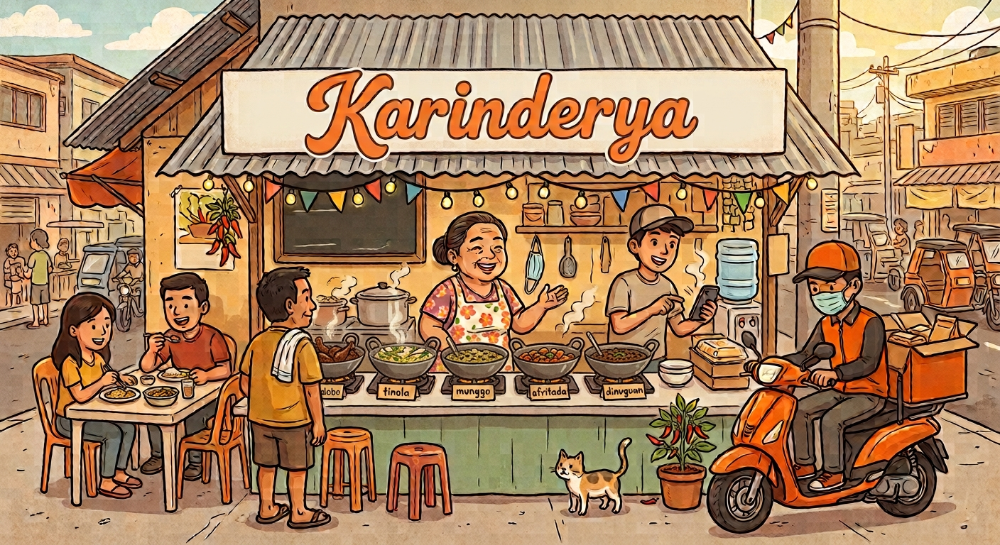
Sarap na parang lutong-bahay
Your neighborhood favorites, just a few clicks away.
Discover comforting Filipino classics and familiar favorites, prepared for your next delicious meal.
Explore the menu ↓Made for sharing
Karinderya classics
Comforting lutong-bahay dishes, made to feel like home.
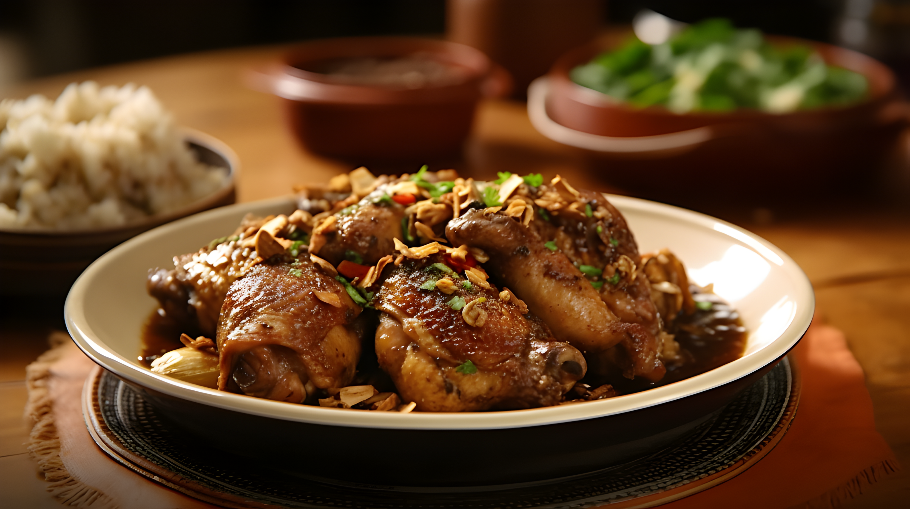
Adobo
A classic Filipino dish made with tender pork or chicken simmered in soy sauce, vinegar, garlic, and spices, creating a rich and savory flavor.
₱35.99 – ₱39.99
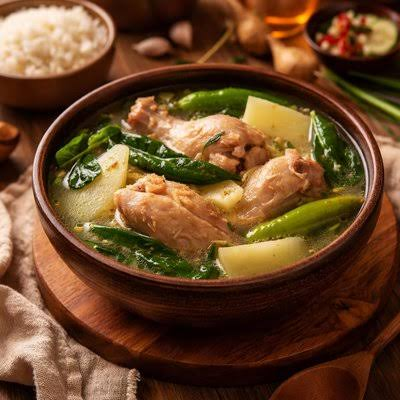
Tinola
A comforting chicken soup cooked with ginger, green papaya, and leafy vegetables in a light and flavorful broth.
₱34.99 – ₱39.99
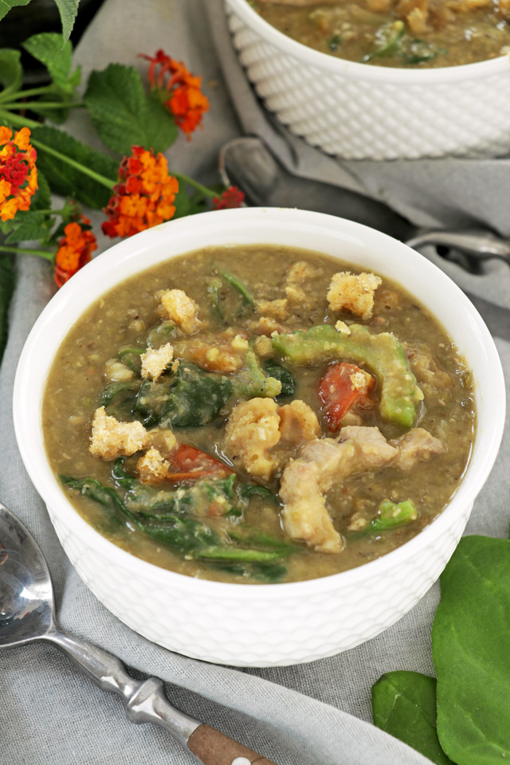
Munggo
A hearty stew made from mung beans, vegetables, and pork or shrimp, known for its nutritious and home-cooked taste.
₱29.99 – ₱38.99
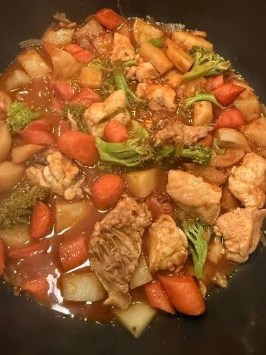
Afritada
A tomato-based stew featuring chicken or pork cooked with potatoes, carrots, and bell peppers for a rich and satisfying meal.
₱38.99 – ₱49.99
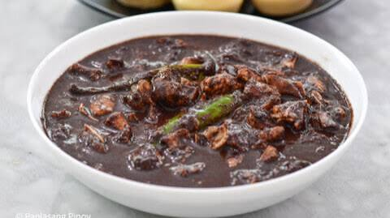
Dinuguan
A savory Filipino delicacy made with pork and a rich, flavorful sauce traditionally prepared with pork blood, garlic, and spices.
₱29.99 – ₱34.99
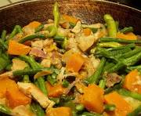
Pinakbet
A healthy vegetable dish made with squash, eggplant, bitter melon, okra, and shrimp paste, offering a unique blend of flavors.
₱29.99 – ₱35.99
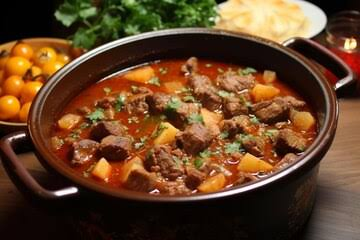
Minudo
A popular Filipino pork stew cooked in a tomato-based sauce with potatoes, carrots, and liver for added richness.
₱32.99 – ₱44.99
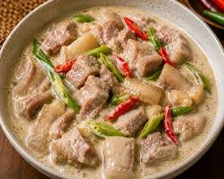
Bicol Express
A spicy and creamy dish made with pork simmered in coconut milk, chili peppers, and shrimp paste, originating from the Bicol region.
₱34.99 – ₱49.99
A little extra joy
Jollibee favorites
Beloved crispy, sweet, and savory picks for every kind of craving.
Chicken Joy Meal
Jollibee's signature hand-breaded, crispy, and juicy fried chicken served with a steaming cup of rice and savory gravy, often paired with a drink or a side of Jolly Spaghetti.
₱87.99 – ₱118.99
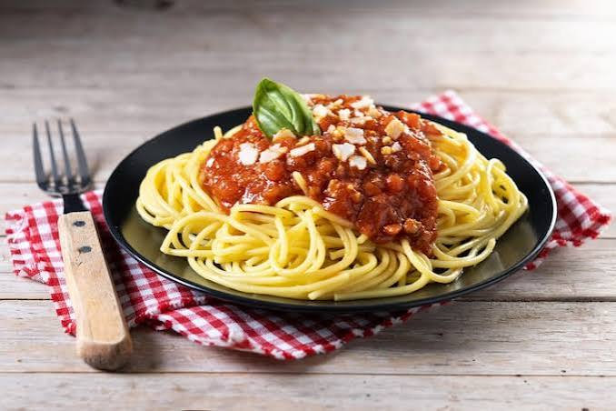
Jolly Spaghetti
A uniquely Filipino-style sweet spaghetti featuring thick banana ketchup-based sauce, sliced hot dogs, ham, and ground meat, topped with grated cheese.
₱68.99 – ₱74.99
Yumburger
Jollibee's classic, budget-friendly hamburger with a seasoned beef patty and special dressing (also available with cheese or as the double-patty Aloha Yumburger with bacon and pineapple).
₱54.99 – ₱69.99
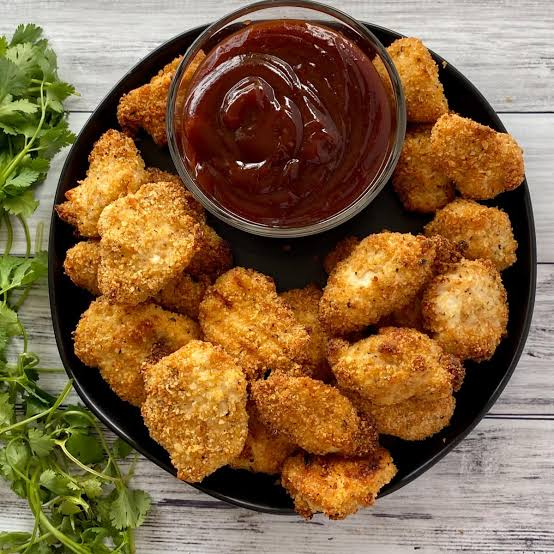
Chicken Nuggets
Crispy, golden, bite-sized chicken chunks made from 100% white meat chicken. They are served hot with your choice of dipping sauce (such as BBQ sauce) and come in 6-piece or 10-piece solo sizes.
₱79.99 – ₱89.99
Jolly Crispy Fries
Jollibee's signature french fries that are crisp on the outside and tender on the inside. They are perfectly salted and available in Regular, Large, or Jumbo sizes.
₱59.99 – ₱74.99